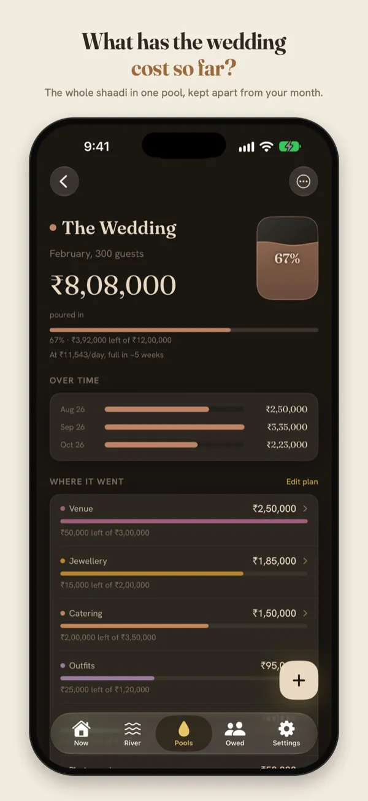
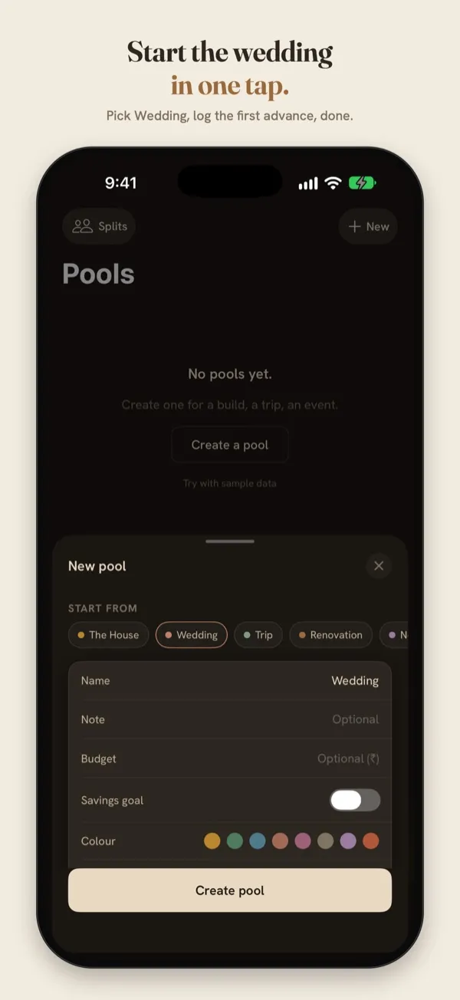

Wedding budget tracker: keep the shaadi apart from the month
An Indian wedding is paid for over months: an advance to the venue, a token to the caterer, jewellery bought when the gold rate looks right, outfits, decor, the photographer. Then every balance falls due in the same few weeks. Here's how to keep track without a spreadsheet nobody updates.
The trouble isn't any one payment. It's that wedding payments sit in the same bank statement as rent and groceries, spread across months, paid by different people in the family. Two questions then get hard to answer: what has the wedding cost so far, and what's still to pay?
1. Give the wedding its own total
Put every wedding payment in one place set aside for the wedding, from the first advance to the last tip. You then have two totals that answer two different questions:
- This month: everything that left your account, wedding included, because it really did.
- The wedding, so far: every payment for the wedding, whichever month it was in.
The second number is the one everyone in the family will ask you for. Having it ready, by category, ends a lot of arguments before they start.
2. Use categories that match how wedding money goes
| Category | What goes in it |
|---|---|
| Venue | Hall, lawn or banquet; rooms for guests; the mehendi and sangeet venues |
| Catering | Per-plate charges, sweets, the tasting, extra counters |
| Jewellery | Gold and silver, making charges, the rings |
| Outfits | Lehenga, sherwani, sarees for every function, tailoring |
| Decor | Mandap, flowers, lighting, tent |
| Photography | Photo, video, the album, the pre-wedding shoot |
| Transport | Baraat, guest pickups, cars for the day |
| Other | Invitations, return gifts, the pandit, band and DJ, mehendi artist |
Published estimates of how a wedding budget splits disagree widely, but jewellery, venue and catering usually lead. Your own split is the one that counts.
3. Give each category a plan
Decide what each category should cost before the advances start: ₹4 lakh for the venue, ₹3 lakh for catering. As payments come in, watch what's left in each. If the decor runs over, you'll know while there's still time to trim the photography, not after.
4. Log advances and balances as they happen
- Log the advance the day you pay it, with the vendor in the note: “Caterer — advance”. The balance goes in later as “Caterer — balance”.
- Keep the quote in your head, not the total. A vendor's quote isn't spent money. Only log what's actually paid, so the total never lies.
- Cash counts. Tips, the band, last-minute flowers. These are exactly the payments that go missing.
- Refunds go back to their category. A cancelled booking refunded? Log it under the same category, so that category's total stays true.
5. When it's over, keep it
Once the last balance is paid, close the wedding's total and keep it. Years later, “what did our wedding cost?” has an exact answer, and the next wedding in the family has a real plan to start from.
Doing this in Ledger
Ledger is a free iPhone app built for exactly this. Your month and your projects are two different shapes: the month is the river, and the wedding is a pool you pour into.


Sample data. The Wedding template sets up the categories for you.
- Pools → New → Wedding. Venue, Catering, Jewellery, Outfits, Decor and Photography are added for you. Set a budget if you have one.
- Plan each category, and Ledger shows what's left of each as payments come in.
- Log a payment in seconds on the keypad, or type it the way you'd say it.
- When it's over, close the pool. It becomes a chapter, with a card you can share with family.
Nothing is shared unless you share it. There's no account, no ads and no tracking, and everything stays on your iPhone.
Plan the wedding in Ledger
Free on the App Store, for iPhone with iOS 17 or later.
Questions
Should wedding payments count in my monthly spending?
Yes, in the month you paid them. That's what left your account. The wedding's own total is what tells you what the wedding cost, and the two don't replace each other.
Two families are sharing the costs. How do we track that?
Keep one total for the whole wedding, and write who paid in each note. If you need to work out who owes whom, Ledger's Splits can divide shared costs between families and show the balance.
Do I need to sign up?
No. Ledger works without an account, and your entries never leave your phone.